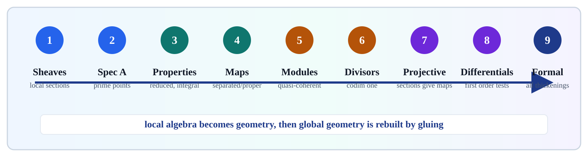
Prime Points
Keep generic points and specialization relations visible.
Local-To-Global
Compute on affine charts, then glue compatible sheaf data.
Infinitesimal Layers
Nilpotents, differentials, and completions survive as geometry.
Source span: printed pages 60-200; PDF pages 75-215. Notebook: chapter-02-schemes/02-schemes.ipynb.

Keep generic points and specialization relations visible.
Compute on affine charts, then glue compatible sheaf data.
Nilpotents, differentials, and completions survive as geometry.
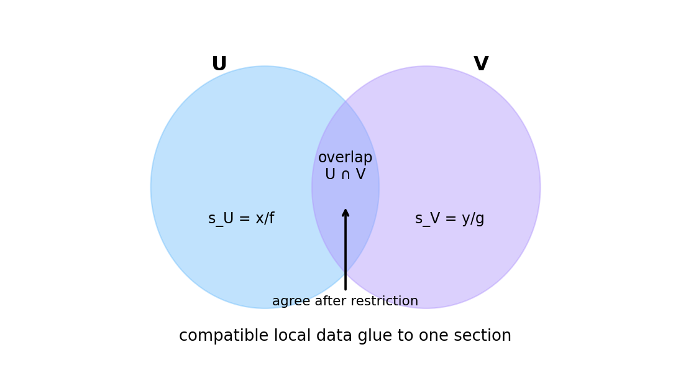
Notebook artifact: compatible restrictions on an overlap have one glued section.
If \(U=\bigcup U_i\) and sections \(s_i\in F(U_i)\) agree on \(U_i\cap U_j\), then there is a unique \(s\in F(U)\) restricting to every \(s_i\).
Regular functions, modules, invertible sheaves, and differentials are all controlled by restriction maps and overlap compatibility.
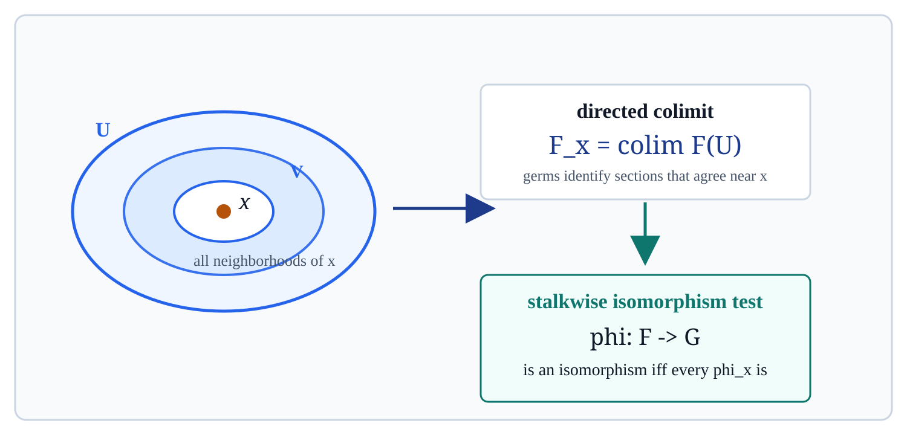
A morphism \(\varphi:F\to G\) of sheaves is an isomorphism exactly when every induced map \(\varphi_x:F_x\to G_x\) is an isomorphism.
Translate a global sheaf claim into a germ-by-germ local check, then glue the answer back.
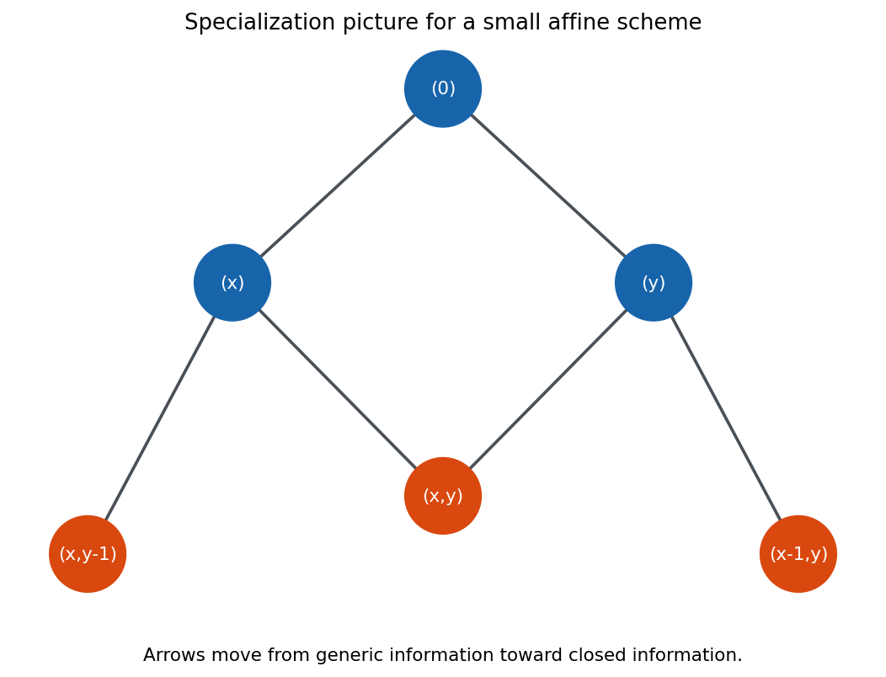
Finite teaching model: arrows run from generic information toward closed information.
\(\operatorname{Spec} A\) is the space of prime ideals of \(A\), equipped with the Zariski topology and the structure sheaf.
For primes \(\mathfrak p\subseteq \mathfrak q\), the point \(\mathfrak q\) lies in the closure of \(\mathfrak p\). Generic points specialize to more closed points.
Irreducible components are represented by actual points, not only by subsets named from outside the space.
\(D(f)=\{\mathfrak p\in\operatorname{Spec}A:f\notin\mathfrak p\}\) is the affine open where \(f\) becomes invertible.
Passing from \(D(f)\) to \(D(fg)\) means inverting one more element. The topology and the algebra move together.
The interactive artifact tracks localized generators and compatibility on overlaps.
affine-open-gluing-lab.html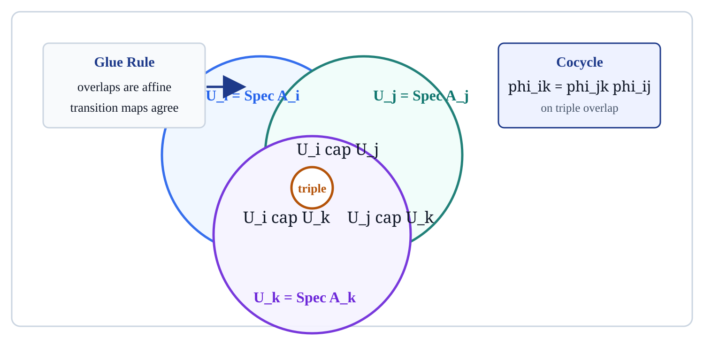
A scheme is a locally ringed space admitting an open cover by affine schemes \(\operatorname{Spec}A_i\).
Overlap isomorphisms must agree on triple overlaps: changing charts along two routes gives the same identification.
Every later global object is checked chartwise, compared on overlaps, and then glued.
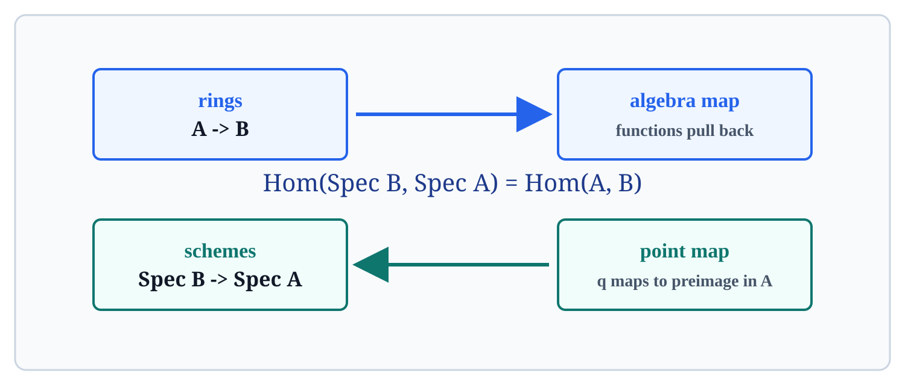
A map \(X\to Y\) pulls regular functions on \(Y\) back to \(X\).
A prime \(\mathfrak q\subset B\) maps to \(\alpha^{-1}(\mathfrak q)\subset A\).
\(\operatorname{Hom}(\operatorname{Spec}B,\operatorname{Spec}A)=\operatorname{Hom}(A,B)\).
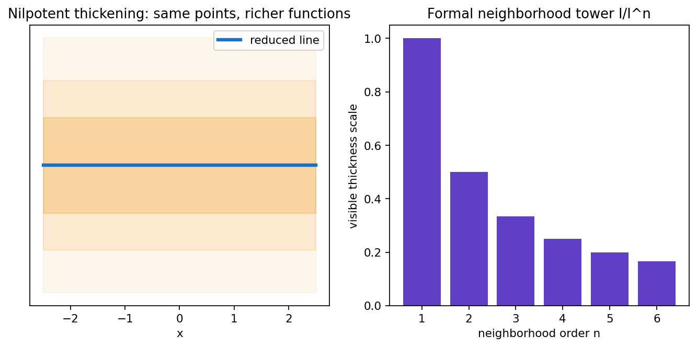
Use the left panel as the warning: nilpotent thickness changes functions without adding ordinary points.
No nonzero nilpotents in the structure sheaf. The point set may be unchanged while the functions change.
The underlying topological space has one generic component.
Integral \(=\) reduced \(+\) irreducible. On an affine chart, \(\operatorname{Spec}A\) is integral exactly when \(A\) is a domain.
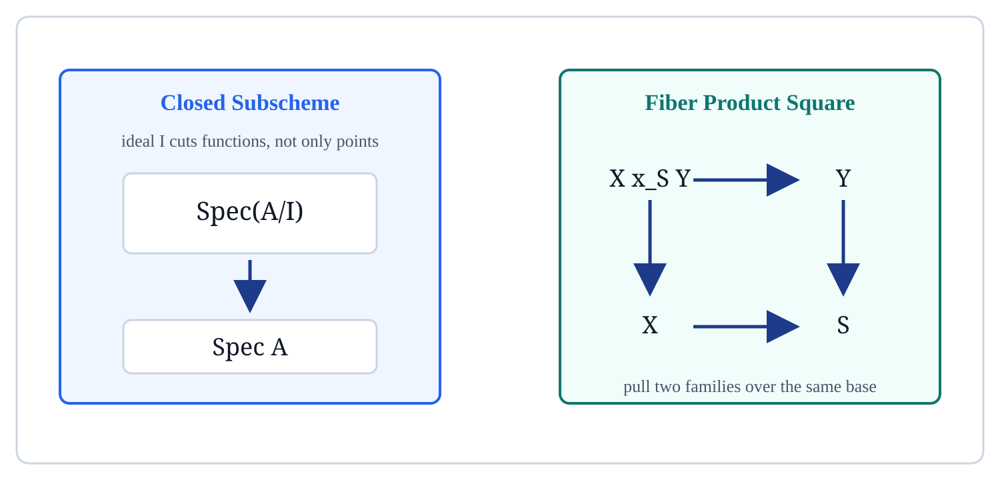
An ideal \(I\subset A\) gives \(\operatorname{Spec}(A/I)\to\operatorname{Spec}A\). The quotient records scheme structure, not just a subset.
\(X\times_S Y\) is the universal scheme mapping to \(X\) and \(Y\) with equal composites to \(S\).
The fiber over \(s\in S\) is \(X_s=X\times_S\operatorname{Spec}\kappa(s)\).
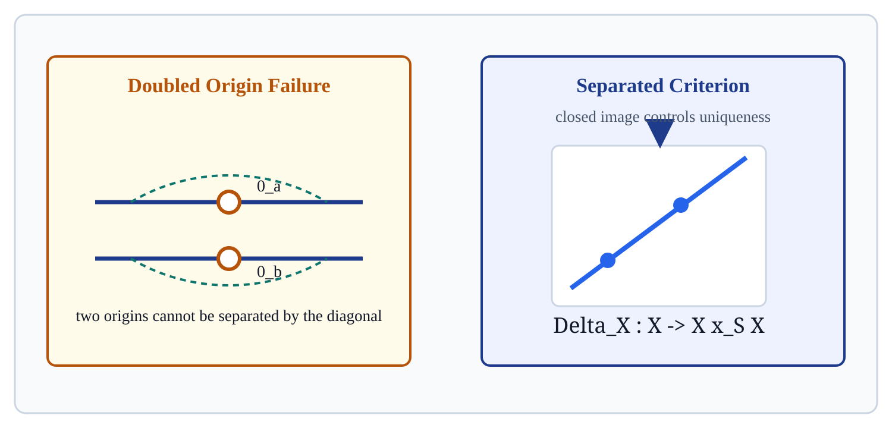
A morphism \(f:X\to S\) is separated when the diagonal \(\Delta:X\to X\times_S X\) is a closed immersion.
The affine line with doubled origin behaves as if a generic point has two incompatible special limits.
Separatedness is the uniqueness part of a good limiting theory.
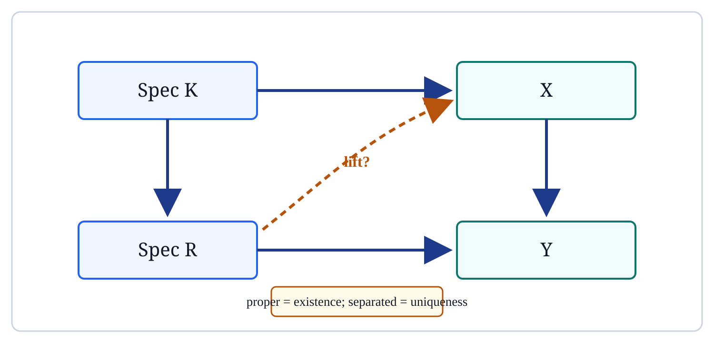
For a DVR \(R\) with fraction field \(K\), a generic map \(\operatorname{Spec}K\to X\) over \(Y\) should extend across \(\operatorname{Spec}R\).
Properness supplies existence of the lift. Separatedness supplies uniqueness of the lift.
Think of proper morphisms as compact-like maps in algebraic geometry.
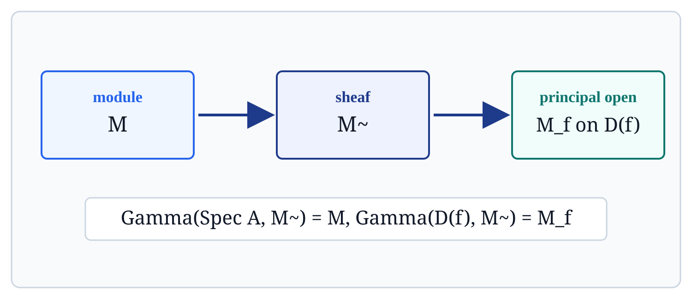
For an \(A\)-module \(M\), \(\widetilde M\) is the associated sheaf of \(\mathcal O_{\operatorname{Spec}A}\)-modules.
Quasi-coherent sheaves are modules glued with localization formulas.
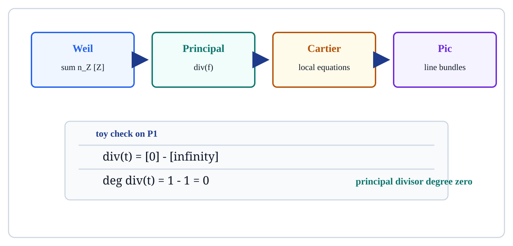
| Object | What It Records |
|---|---|
| Weil | Formal sums of codimension-one subvarieties. |
| Principal | Zeros and poles of a rational function. |
| Cartier | Locally principal equations with compatible ratios. |
| Picard | Line bundle classes under tensor product. |
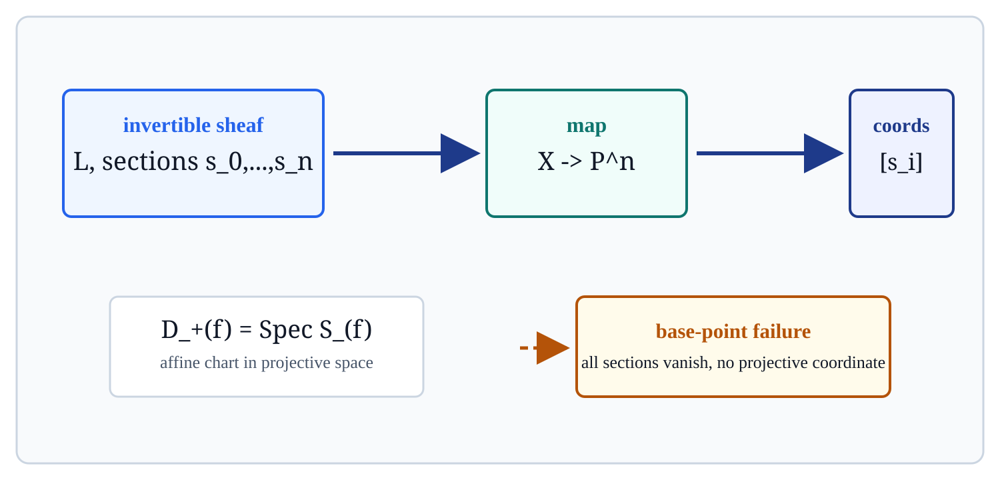
Sections \(s_0,\ldots,s_n\) of an invertible sheaf \(\mathcal L\) define \(x\mapsto [s_0(x):\cdots:s_n(x)]\) where not all sections vanish.
For a graded ring \(S\), \(D_+(f)=\operatorname{Spec}S_{(f)}\) gives the affine chart where the homogeneous element \(f\) is nonzero.
If all \(s_i\) vanish at \(x\), there is no projective coordinate at \(x\).
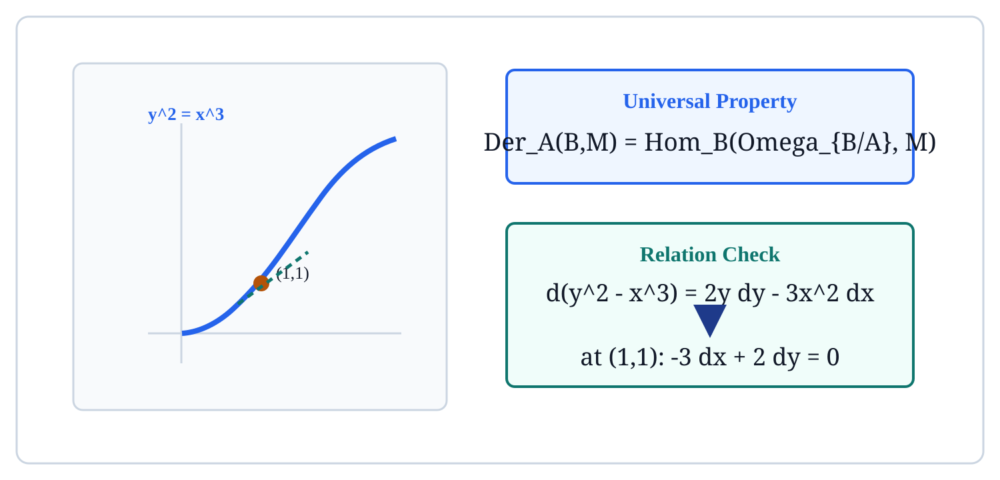
\(\operatorname{Der}_A(B,M)=\operatorname{Hom}_B(\Omega_{B/A},M)\). The module of differentials represents derivations.
For \(f=y^2-x^3\), \(df=2y\,dy-3x^2\,dx\). At \((1,1)\), the relation is \(-3\,dx+2\,dy=0\).
Differentials translate infinitesimal motion into a sheaf-theoretic object.
The right panel becomes the main object: a tower of infinitesimal neighborhoods.
If \(Y\subset X\) is cut out by an ideal sheaf \(\mathcal I\), the formal completion remembers all thickenings \(Y_n\).
The ordinary points can stay fixed while the function algebra keeps deeper nilpotent layers.
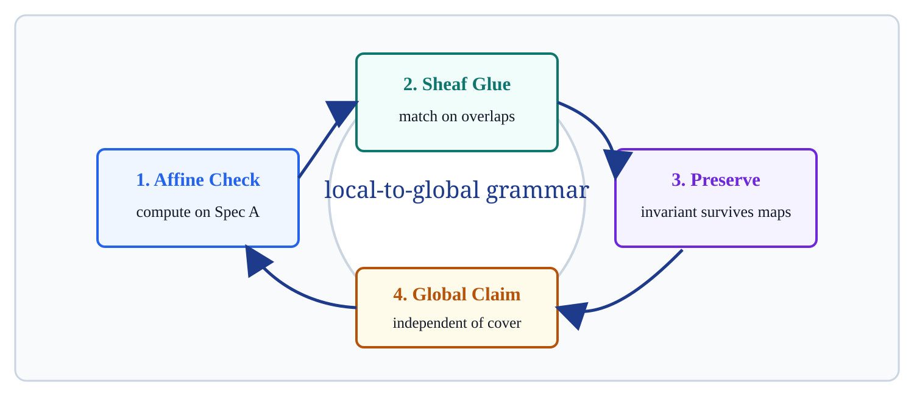
Check a claim on affine opens, compare the results on overlaps using sheaves, and then prove the invariant is independent of the chosen cover.
Localization makes formulas explicit.
Compatibility on overlaps gives global objects.
Prime points, nilpotents, codimension-one data, and differentials survive maps.